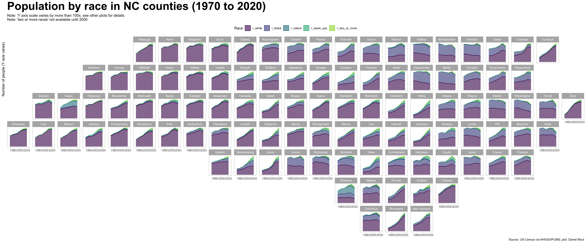
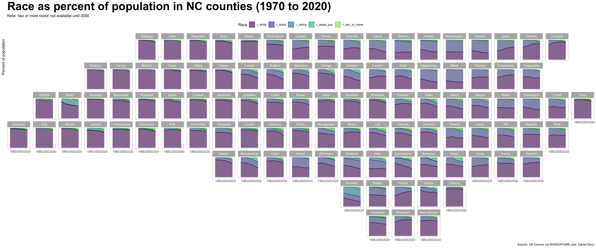
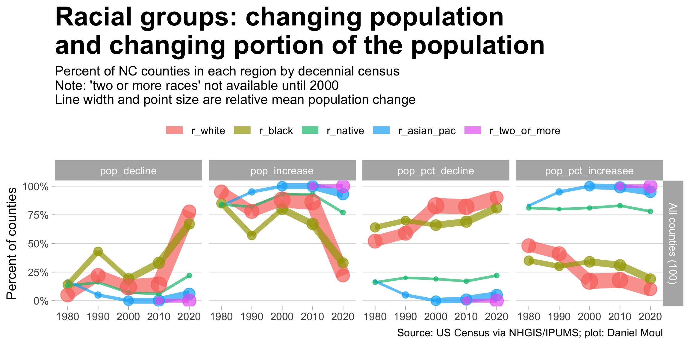
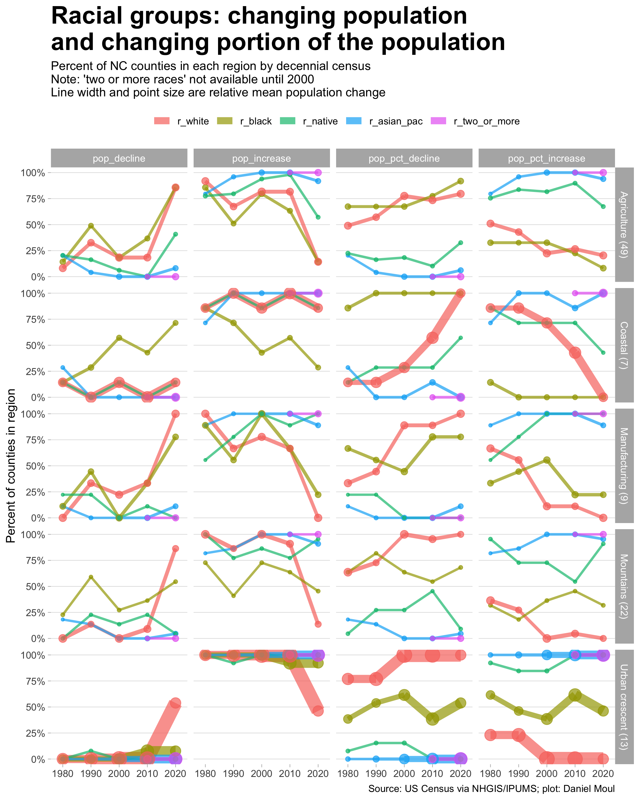
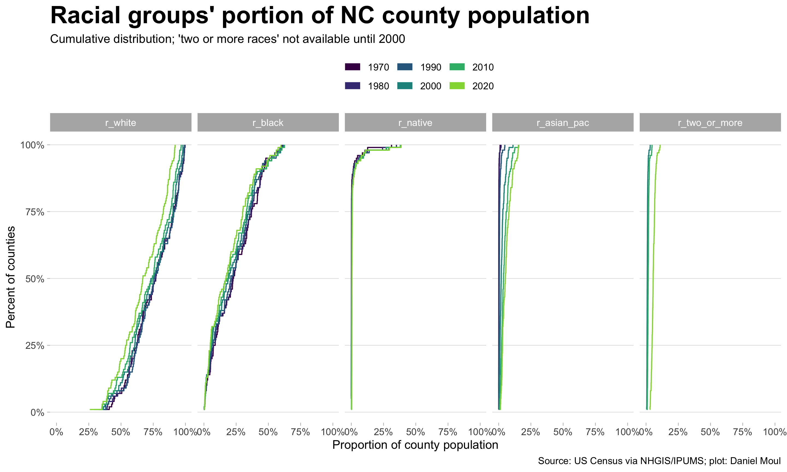
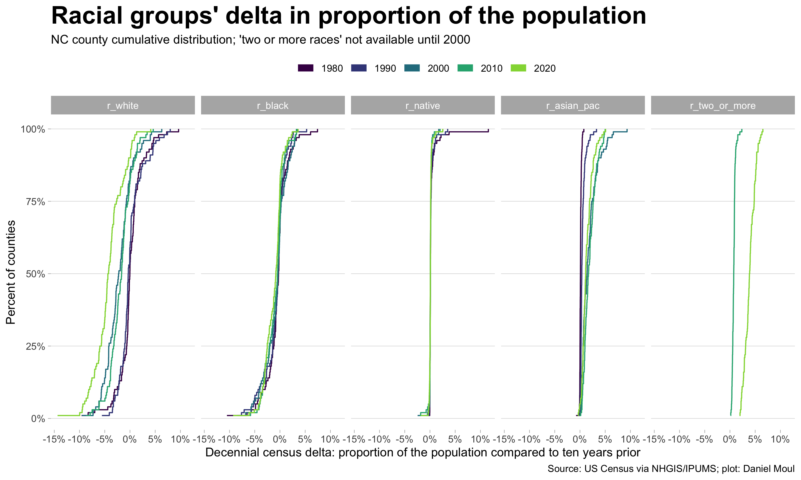
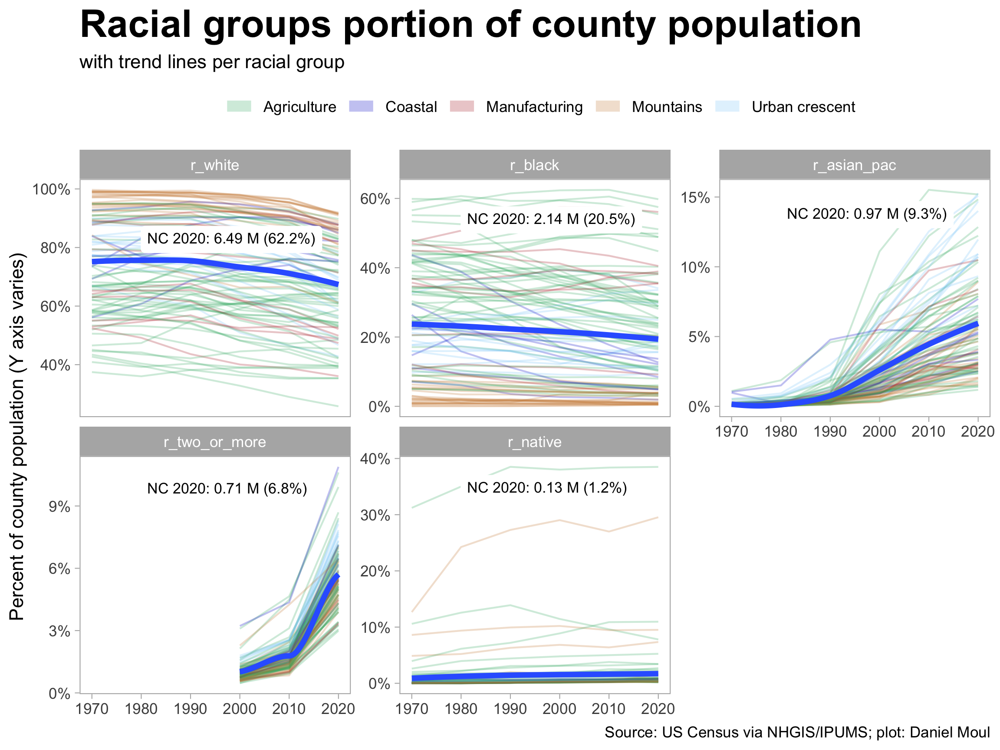
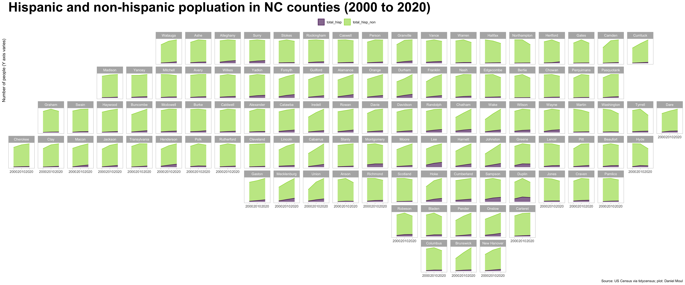
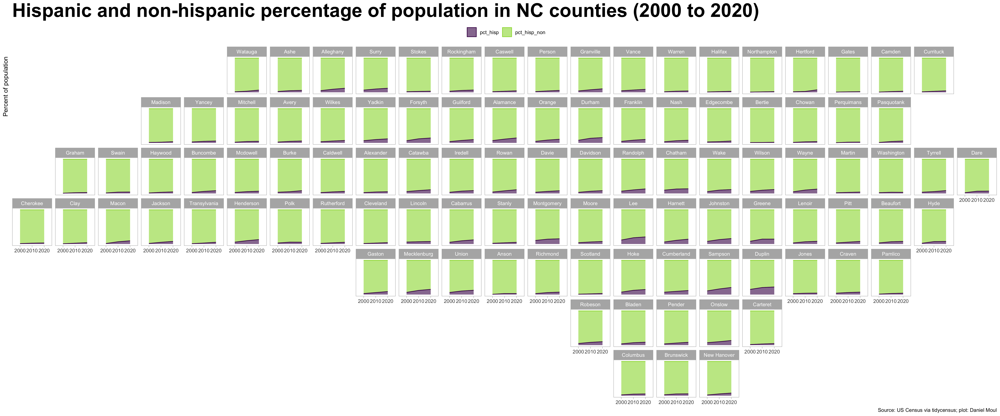
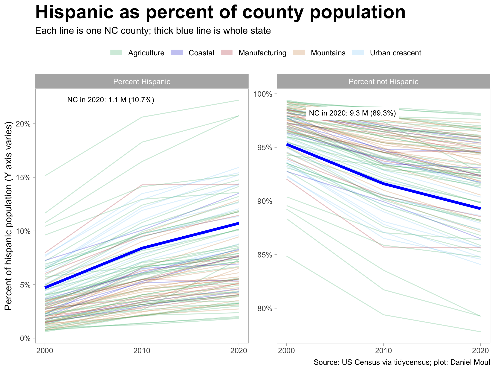

3 NC racial-ethnic makeup and changes
Over the last 50 years North Carolina has experienced noticeable changes in the racial and ethnic mix in most counties. The Asian immigration wave is quite visible as is the increase in people of two or more races. There has been a noticeable decline in white and black population in some counties and a decline in their percentage of county population in most counties.
Racial categories used below include the following:
- White
- Black
- Asian and Pacific Islander (combined; also includes Hawaiian)
- Native American
- Two or more races (combined with “one other race”)
Ethnic categories explored here are Hispanic and non-Hispanic.
Hispanic origin is considered an ethnicity, not a race. Hispanics may be of any race.1
The tidycensus package offers the following helpful warning when returning results from 2020, which is relevant to this endeavor:
2020 decennial Census data use differential privacy, a technique that introduces errors into data to preserve respondent confidentiality. Small counts should be interpreted with caution. See https://www.census.gov/library/fact-sheets/2021/protecting-the-confidentiality-of-the-2020-census-redistricting-data.html for additional guidance.
Identity is complicated. Categories used by the US Census are imperfect despite a lot of care going into their formulation (see the standards on race and ethnicity set by the U.S. Office of Management and Budget (OMB) in 1997). And the questions asked in US Census surveys can change year to year.
This creates ambiguities. For an example of their outworkings, see Who Is ‘Some Other Race,’ the Second-Largest Racial Group in Massachusetts? by Luke Schuster, April 26, 2022, www.bostonindicators.com.
3.1 Racial groups
Placing the plots in approximate geographic position (Figure 3.1) makes regional patterns visible:
- African-Americans are nearly absent in the western third of the state and highest portions in the eastern third.
- Native Americans are concentrated in Swain and Jackson counties in the far west of the state and Robeson, Scotland, and Hoke in the south central.
- The Asian population has grew significantly after 1990. People of one other race or more than one race has grown since 2000 in most counties and most especially in the urban crescent.
- White population growth declined or turned negative in many counties, especially in the ten years to 2020.
- Some counties show counter trends, for example, whites make up nearly all of the growth in most of the coastal counties: Currituck, Dare, Carteret, Pender, New Hannover, Brunswick.

It’s easier to compare counties and see the changing mix when looking at the percent of population by race.

3.1.1 Changes in county population and proportion of the population
Racial groups at the county level (Figure 3.3) makes visible that there have been more counties seeing declines in the white and black population (1) since 2000 in the population; and (2) since 1980 in the proportion of the population.

Using the regional designations defined in Figure 1.7, the differing dynamics in the regions become more visible:

The cumulative distribution of racial groups’ portion of county population colored by census year (Figure 3.5) makes visible the following:
- White and black curves are shifting left, meaning their proportion of the population is decreasing whatever the current proportion of counties’ population.
- Asian and Pacific islander and two or more races are shifting right while opening at the higher end, meaning they are growing at a fairly constant rate whatever the proportion of a county’s population. “Two or more” grew a surprisingly large amount in the ten years to 2020. Still, these groups’ proportion of the population remains quite small.
- The proportion of county population that is Native American population has increased in counties with the largest portions of Native Americans.

We can also look directly at changes (delta) in proportion of the population from the last decennial census to the next.

Plotting each racial group’s county population portion over time on one plot (Figure 3.7) makes some trends easier to see:
- Asian population has grown everywhere; the growth rate accelerated dramatically after 1990 (or the method for recording Asians changed before the 2020 census)
- People of two or more races or “one other race” has more than doubled in the two decades 2000-2020 with most of the growth occurring after 2010.
- Whites remain a large majority in most counties (only about 10% of counties don’t have a white majority), however their proportion of the population is in decline.
- Black population proportion has been declining for the whole time period in this data set but since 2000 at a slower rate than whites.
- Native Americans populations are concentrated in a small number of counties.

3.2 Hispanic / Latino ethnicity
Below I use ‘Hispanic’ as a shorthand to refer to Hispanic and Latino. The US Census Bureau includes both in the same category.
The Hispanic population has grown significantly 2000 to 2020 to over 10% of the state population. The growth in the ten years to 2010 was larger than the ten years to 2020.



From description at https://api.census.gov/data/2021/pep/natmonthly.html ↩︎